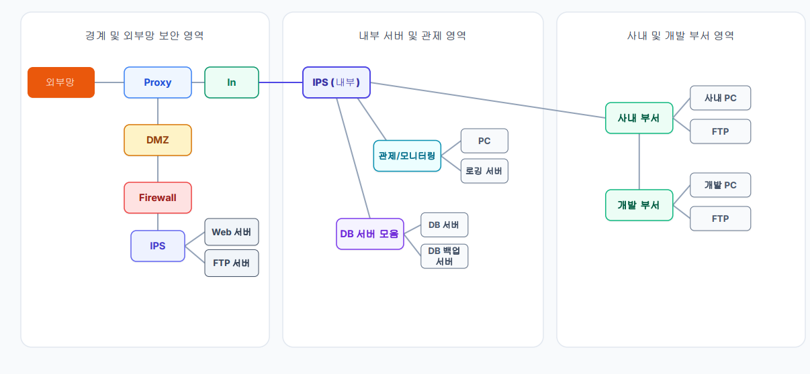
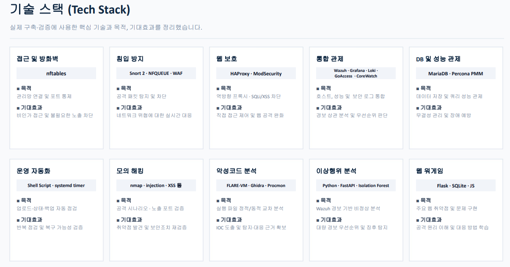

01
SINCERE
성실하다
- 상황
- 팀 과제에서 매주 자료를 정리하고 진행 상황을 공유할 사람이 필요했다.
- 행동
- 정해진 날마다 자료를 확인하고 빠진 내용을 보완해 마감 전에 공유했다.
- 결과
- 4주 동안 공유 약속을 모두 지켰고 팀이 마감 이틀 전에 제출을 끝냈다.
SECURITY · PORTFOLIO
PORTFOLIO / THREE WAYS I WORK
맡은 일을 꾸준히 해내고, 필요한 일을 먼저 찾으며, 작은 불편도 놓치지 않는 작업 방식을 소개합니다.
지금 보는 강점 — 성실하다
대상 함께 과제를 하거나 결과물을 검토할 사람
핵심 강점 성실함 · 부지런함 · 관찰력
프로젝트 보안관제서버 관리
PROJECT ARCHIVE / WHAT I BUILT
보안 도구를 나열하는 데 그치지 않고, 관제 환경을 직접 구성하고 공격·방어 흐름을 검증한 프로젝트입니다.
외부망·내부 서버·사내 및 개발 부서 영역을 나눈 관제 구조를 설계하고, 공격자와 피해자 환경을 구현해 보안 이벤트의 흐름을 확인했습니다.


WORKING PRINCIPLE
PUBLIC EVIDENCE
“4주 동안 약속한 자료 공유 8회를 모두 지켰고, 팀은 최종 마감 이틀 전에 제출을 마쳤다.”
이름을 제외한 식별 정보는 제거하거나 마스킹하고 결과 문장만 공개했습니다.
디자인된 근거 메모 보기 →